講座で解説のために作成するアプリの紹介とプロジェクトの作成
蔵館検索アプリ
今回の講座でAndroid アプリ開発を学ぶ上で１つのアプリを開発します。
機能として以下
- 図書館で管理されている蔵書の検索機能
- 蔵書名からレンタルできる図書館の検索機能
- 蔵書検索した履歴管理機能
検索機能に利用するサービス
カーリル 図書館 API
Google Books API
ネットワーク通信処理に利用するライブラリ
okHttp
検索履歴を保存するアプリ内データベースに利用するライブラリ
Realm
新しいプロジェクトを作る
1.Windows ホーム画面の左下にある検索欄にAndroidと入力しAndroid Studioをクリックし起動します。
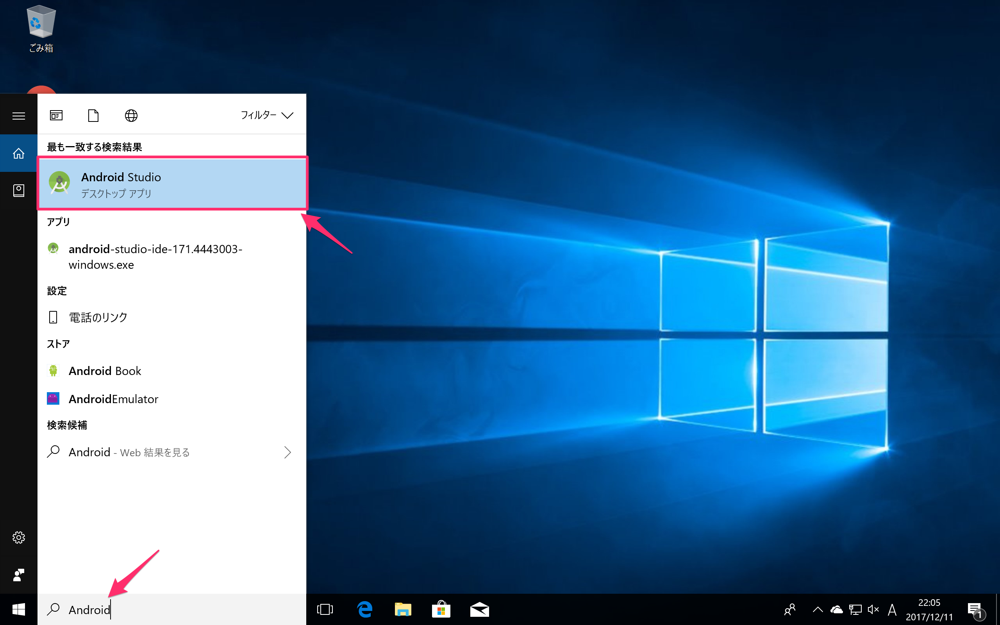
2.Start a new Android Studio projectをクリック
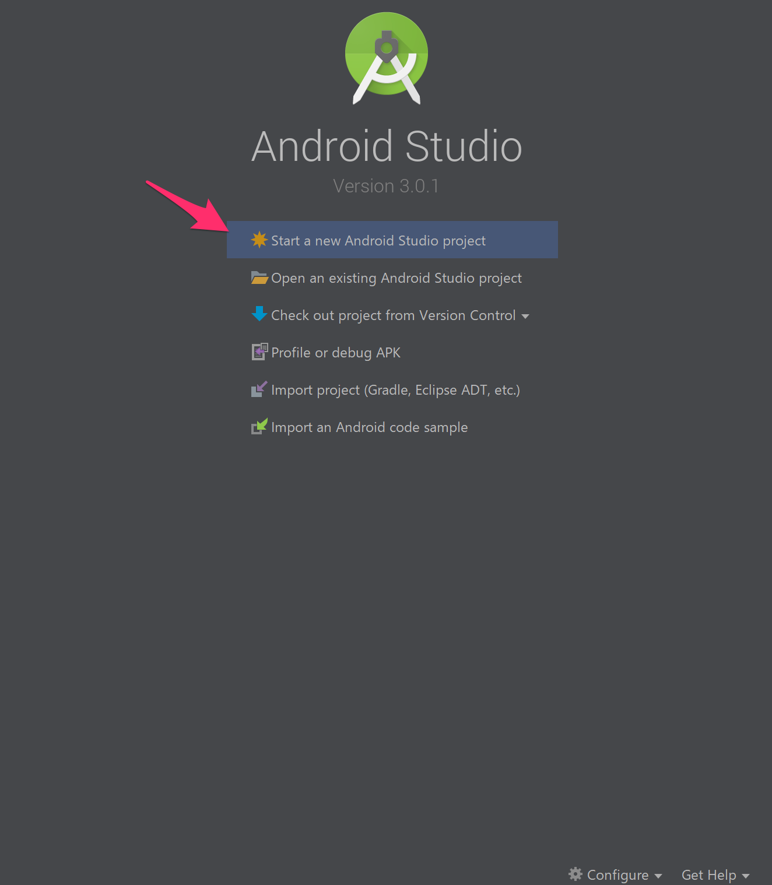
3.新規プロジェクト作成時にはアプリ名などを入力します
以下の表の通りに項目を設定してNextをクリックします。
| 項目名 | 説明 | 入力内容 |
|---|---|---|
| Application name | アプリ名 | BookDiscovery |
| Company domain | 全世界の独自ドメイン | example.com |
| Project location | プロジェクトの保存先 | 任意設定 |
| include C++ support | C++ライブラリ取込み | チェックを外す |
| include Kotlin support | Kotlinライブラリ取込み | チェックを外す |
Company domainは講義の説明で作成するアプリはリリースしませんので独自ドメインをお持ちでなければ初期値のままで問題ありません。
今回の講義ではC++での実装はありませんのでチェックを外しておきます。
また、Kotlinは後半で利用方法を紹介しますので一旦チェックを外しておいてください。
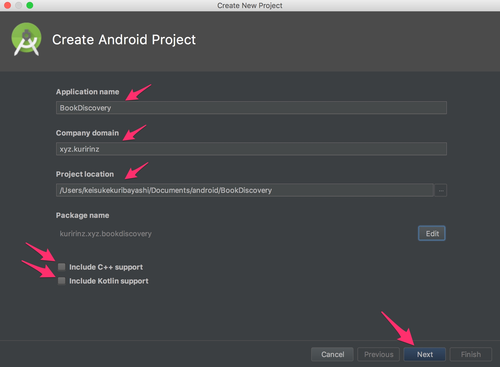
4.今回作成するAndroidアプリでサポート対象とするOSバージョンの下限設定を行います
Phone and Tabletのみチェックをつけ、API 23: Android 6.0 (Marshmallow)を選択したら、Nextをクリックします
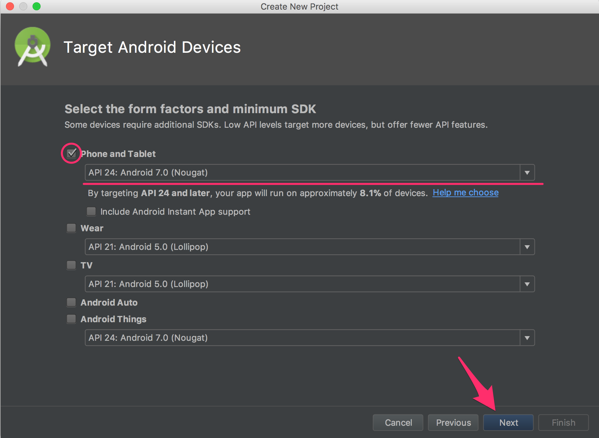
5.Empty Activityを選択しNextをクリックします
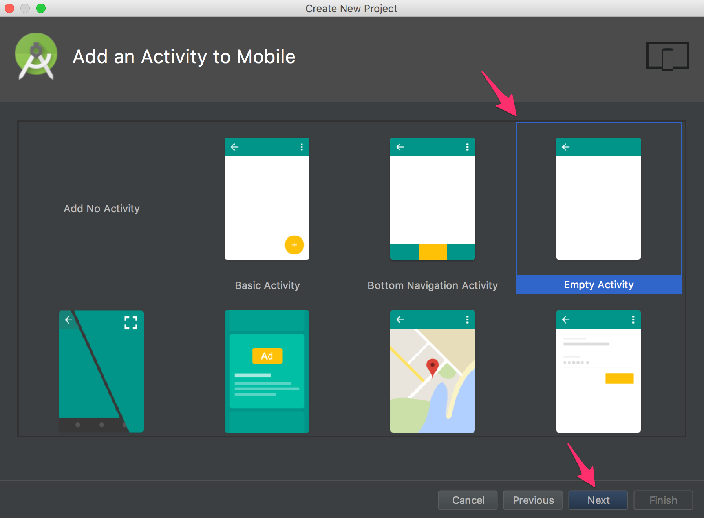
6.初期画面となるActivity設定を行います
以下の表の通りに項目を設定してNextをクリックします
| 項目名 | 説明 | 入力内容 |
|---|---|---|
| Activity Name | 画面名 | MainActivity |
| Generate Layout File | デザインファイル作成有無 | チェックを入れる |
| Layout Name | デザインファイル名 | activity_main |
| Backwards Compatibility(AppCompat) | 下方互換性の有無 | チェックを入れる |
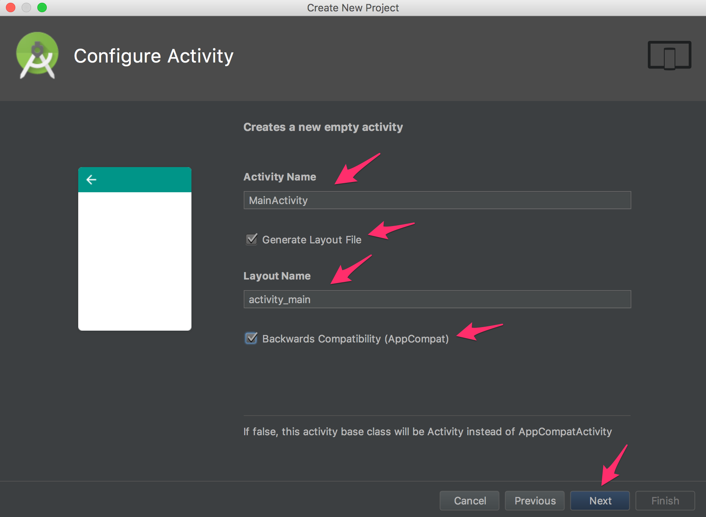
7.「6.」で設定した内容でAndroidアプリの開発のデフォルト環境を構築が実行されます
インストールが終了しdoneの文字が表示されたらFinishをクリックします。
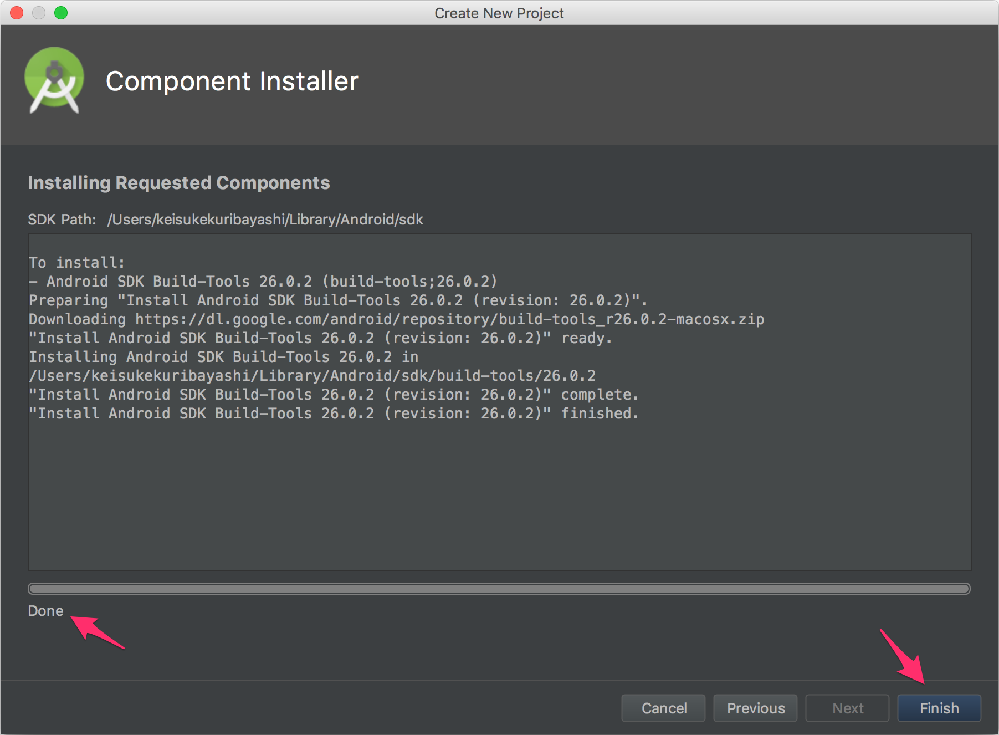
8.構築が終了すると開発画面に遷移します
Messagesエリアにエラーとリンクが表示されている場合はリンクをクリックします
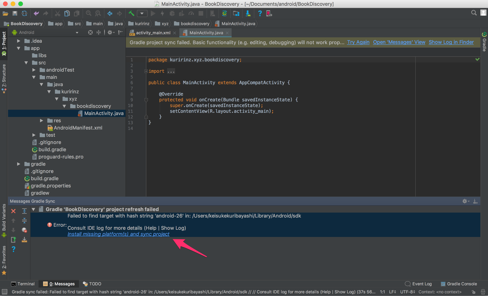
9.不足しているComponentのインストールを行います
android-sdk-licenseが選択された状態でAcceptにチェックをいれNextをクリックします
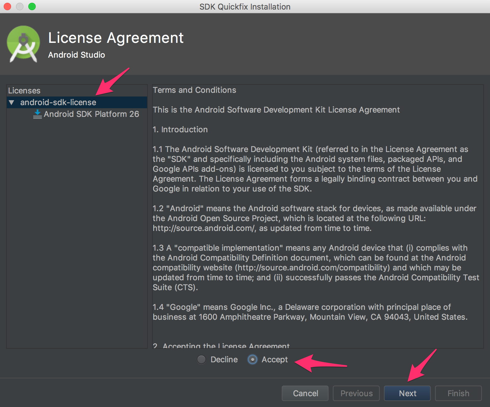
10.Componentのインストール状況が表示されるので終了を待ちます
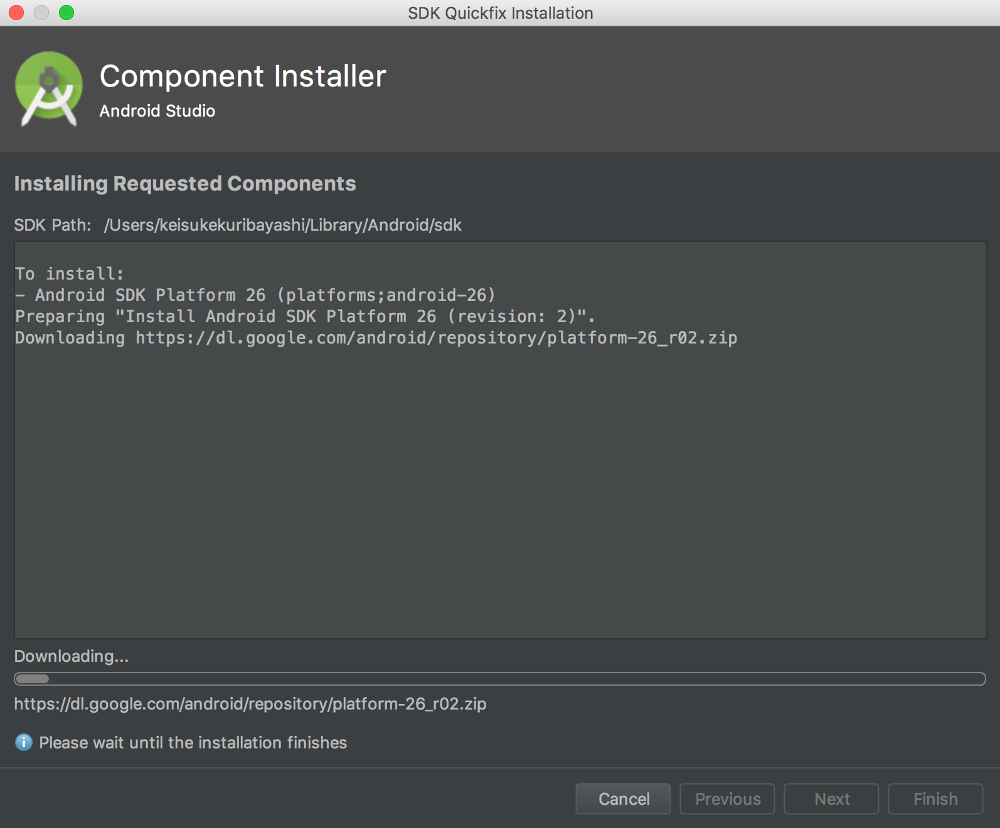
11.インストールが終わったらFinishをクリックします
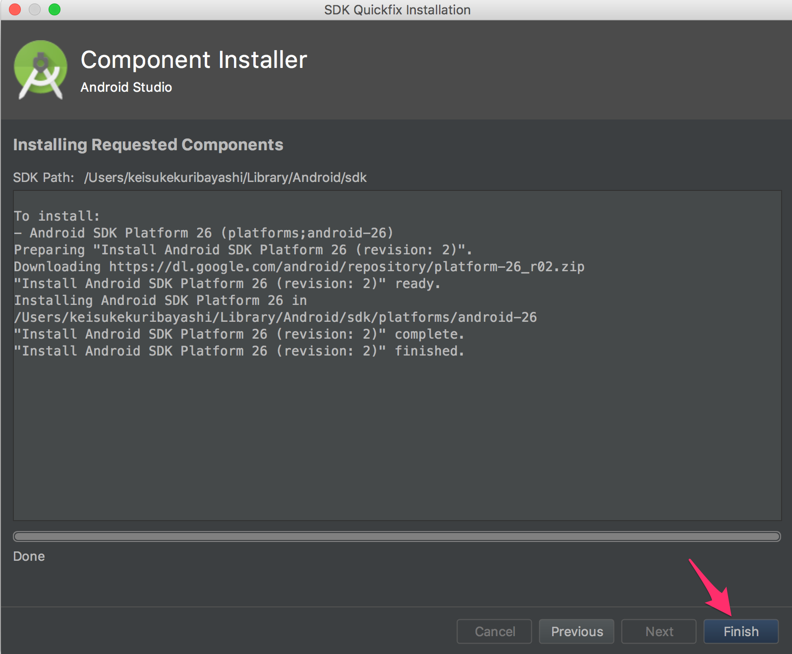
12.Android Studioの開発画面に戻りエラーが消えていたらセットアップ完了です
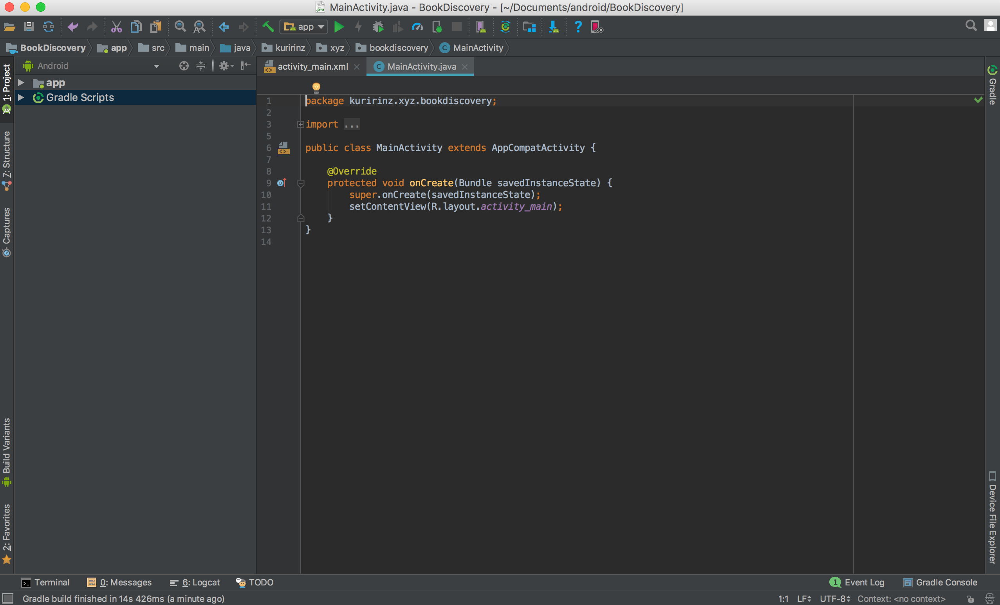